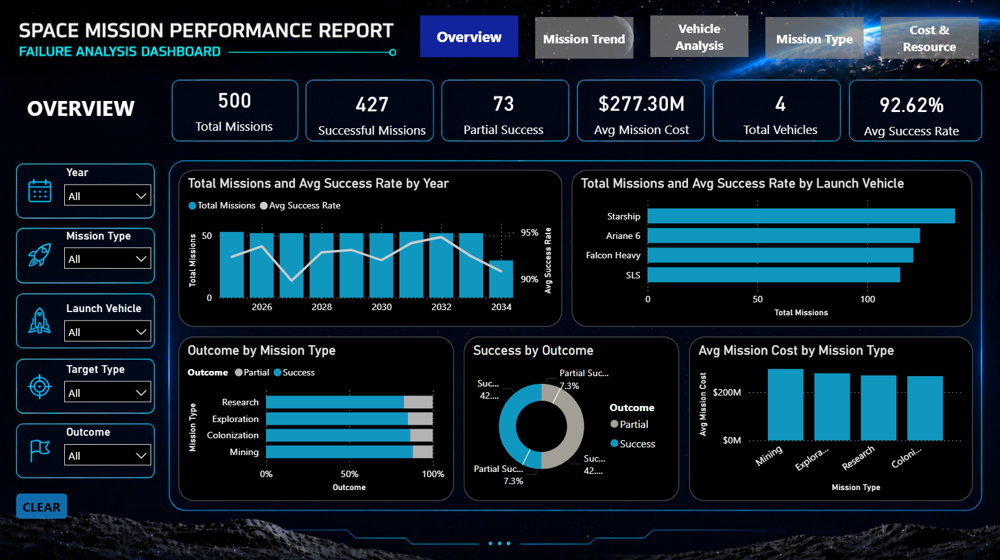
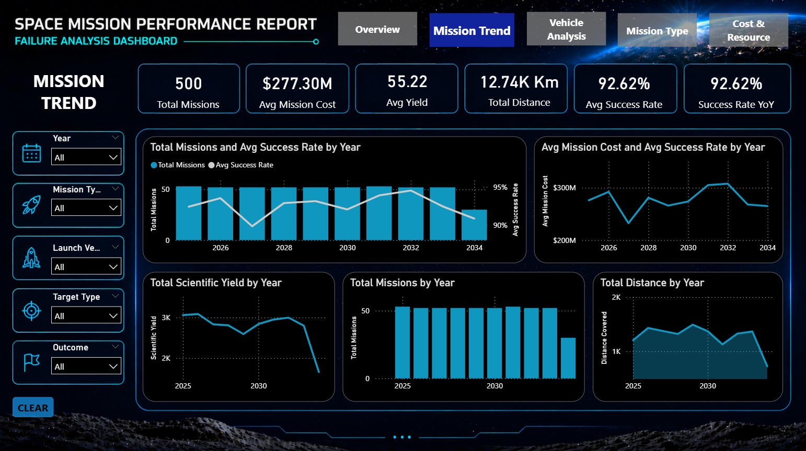
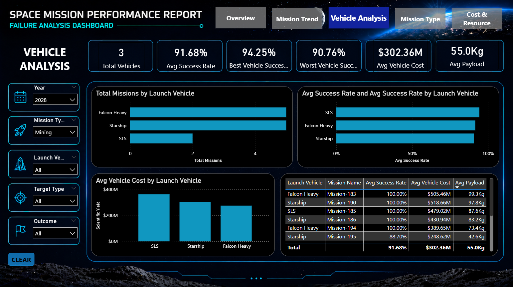
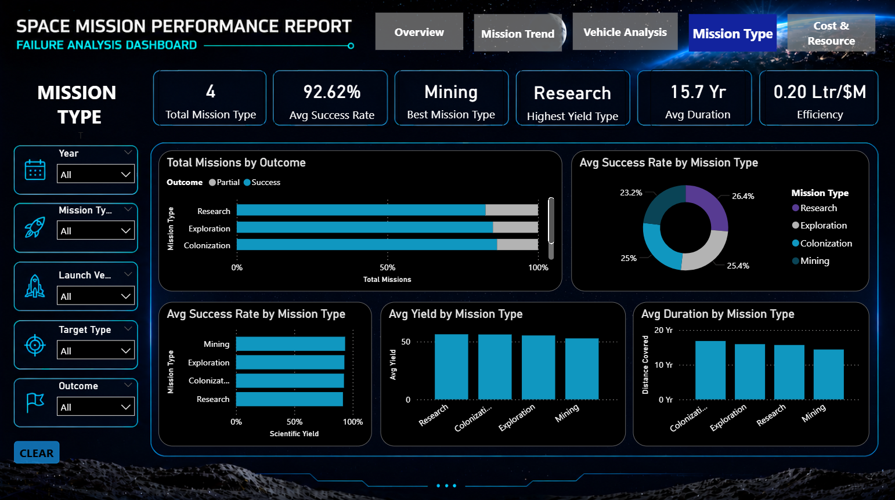
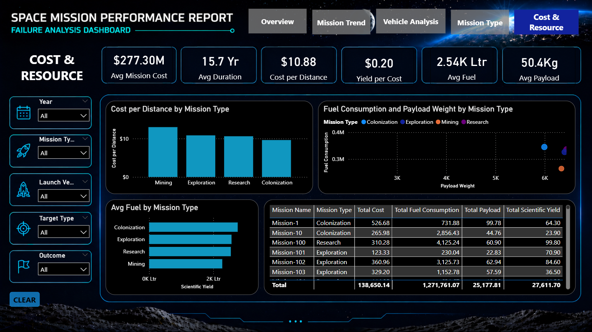
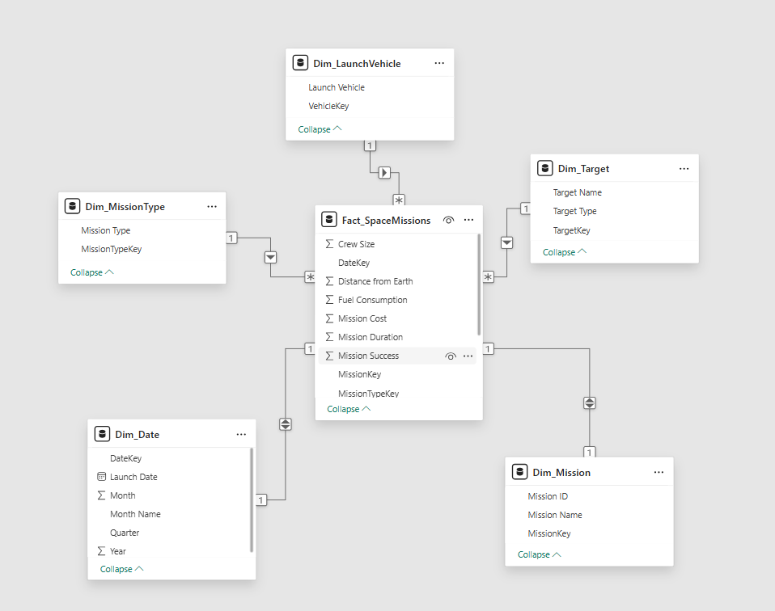

✕
A complete Power BI analytics project that evaluates mission success, cost performance, launch vehicle efficiency, fuel usage, and scientific yield across 500 space missions.
Project Overview
Space missions are high-investment, high-risk operations. Decision-makers need a single interactive report to understand where failures occur, which vehicles perform better, and how cost and resources affect mission outcomes.
Dashboard Pages
Each report page is designed around a specific analytical question, from high-level KPIs to granular vehicle and cost breakdowns. Click any screenshot to enlarge.
PAGE 01
A complete mission performance summary — total missions, success counts, average cost, yearly trends, outcome distribution, and vehicle comparison at a glance.

PAGE 02
Tracks performance across time — year-wise mission count, average cost, success rate, total scientific yield, and total distance covered reveal patterns over decades.

PAGE 03
Compares launch vehicles across missions, success rates, cost performance, and payload efficiency — identifying the best and worst performing vehicles.

PAGE 04
Analyzes performance across mission categories — Mining, Research, Exploration, and Colonization — using success rate, scientific yield, duration, and outcome.

PAGE 05
Deep-dives into cost efficiency, fuel consumption, payload weight, cost per distance, yield per cost, and mission-level resource details for operational planning.

Data Modeling
The report uses a classic star schema with Fact_SpaceMissions at the center. This improves performance, simplifies DAX, and keeps relationships clean.

DAX Measures
Every measure powering the report — from simple counts to year-over-year comparisons, best/worst rankings, and efficiency ratios.
COUNTROWS(Fact_SpaceMissions)CALCULATE(
[Total Missions],
Fact_SpaceMissions[Outcome] = "Success"
)CALCULATE(
[Total Missions],
Fact_SpaceMissions[Outcome] = "Partial Success"
)DIVIDE(
[Successful Missions],
[Total Missions]
)VAR CurrentRate = [Avg Success Rate]
VAR PreviousRate =
CALCULATE(
[Avg Success Rate],
DATEADD(Dim_Date[Launch Date], -1, YEAR)
)
RETURN
DIVIDE(CurrentRate - PreviousRate, PreviousRate)AVERAGE(Fact_SpaceMissions[Mission Cost])DIVIDE(
SUM(Fact_SpaceMissions[Mission Cost]),
SUM(Fact_SpaceMissions[Distance from Earth])
)DIVIDE(
SUM(Fact_SpaceMissions[Scientific Yield]),
[Total Cost]
)MAXX(
VALUES(Dim_LaunchVehicle[Launch Vehicle]),
[Avg Success Rate]
)MINX(
VALUES(Dim_LaunchVehicle[Launch Vehicle]),
[Avg Success Rate]
)VAR TopMission =
TOPN(1,
VALUES(Dim_MissionType[Mission Type]),
[Avg Success Rate], DESC)
RETURN
CONCATENATEX(TopMission, Dim_MissionType[Mission Type], ", ")VAR TopYield =
TOPN(1,
VALUES(Dim_MissionType[Mission Type]),
[Avg Yield], DESC)
RETURN
CONCATENATEX(TopYield, Dim_MissionType[Mission Type], ", ")Business Insights
What the data reveals about space mission performance, cost efficiency, and resource utilization.
An average success rate of 92.62% across 500 missions indicates strong operational reliability across all mission types and vehicles.
At $277.30M average per mission, cost optimization is a critical decision factor — cost-per-distance and yield-per-cost metrics highlight inefficiencies.
Launch vehicles show significant performance differences in success rate, payload capacity, and cost — enabling data-driven vehicle selection.
Research and Exploration missions lead in scientific yield, while Mining missions show the highest cost efficiency per distance covered.
Fuel consumption and payload weight are key variables in planning — their relationship with success rate reveals optimization opportunities.
Year-wise analysis identifies specific periods with cost spikes, lower success rates, or reduced yield — enabling proactive planning.
Project Details
Power BI Desktop · DAX · Power Query · Data Modeling · GitHub Pages
Dashboard design · KPI creation · Star schema modeling · Interactive filtering · Business insight generation
Power BI report · Dashboard screenshots · DAX documentation · Data model explanation · Public project webpage